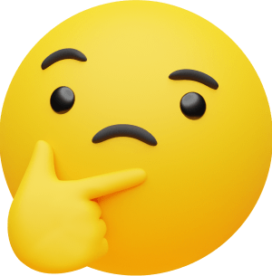
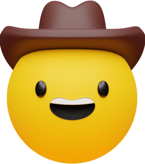

About Me 
Hello! My name is Joseph, and I'm a Computer Science student and future Software Engineer! Coding scratches the part of my brain that requires me to break down complex problems, and envision their solutions - and thats why I love it so much! Outside of learning code, I can usually be found playing trombone, video games, or out on a trail somewhere.
My Experience? Well... 
I am looking to gain some! But for the meantime, look at some of my projects below. Also, click here to view my resume for more detailed project descriptions.
Hear How You Feel | Fall 2023
AI that detects your facial expression and plays a funny sound based on its result
Majestic Pies | Current
A simple ecommerce website for a local, family owned pizza resteraunt that would enable them to captalize on online orders, and further retain customers through online promotions.
Precision Farming | Current
Simulate drones to automate farming task designated by the user, like crop analyzing, soil moister levels, and seeding.
Mock Coffee System | Spring 2023
Friendly GUI that allows a barista to customize coffee orders to customer specifications, as well as view previous store transactions.
Scientific Calculator | Spring 2023
Created a simple scientific calculator using object-oriented principles that implements user friendly interactions via buttons and text-fields.
This | Current
Actually, what you're reading is one of my on-going projects. It's not the prettiest portfolio out there, but everyone starts somewhere.